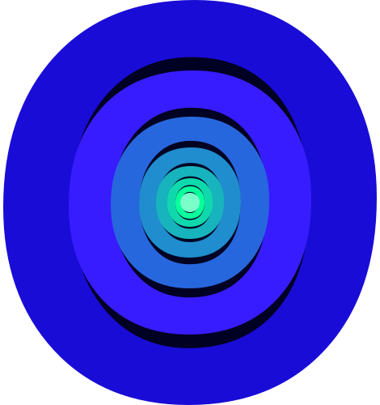

<footer class="footer">
  <div class="container footer__container">
    <a class="logo footer__logo" href="#"
      ><svg class="" width="102" height="34">
        <use xlink:href="../img/svgSprite/sprite.svg#logo-footer"></use>
      </svg>
    </a>
    <ul class="social-list footer__social-list">
      <li class="social-list__item">
        <a class="social-list__link" href="#" aria-label="instagram">
          <svg class="social-list__icon" width="22" height="22">
            <use xlink:href="../img/svgSprite/sprite.svg#insta"></use>
          </svg>
        </a>
      </li>
      <li class="social-list__item">
        <a class="social-list__link" href="#" aria-label="facebook">
          <svg class="social-list__icon" width="15" height="28">
            <use xlink:href="../img/svgSprite/sprite.svg#fb"></use>
          </svg>
        </a>
      </li>
      <li class="social-list__item">
        <a class="social-list__link" href="#" aria-label="twitter">
          <svg class="social-list__icon" width="23" height="20">
            <use xlink:href="../img/svgSprite/sprite.svg#twitter"></use>
          </svg>
        </a>
      </li>
    </ul>
    <a
      class="copyright-link footer__copyright-link"
      href="https://github.com/AlexOdnov"
      >Разработано
      <picture>
         </picture
    ></a>
  </div>
</footer>
